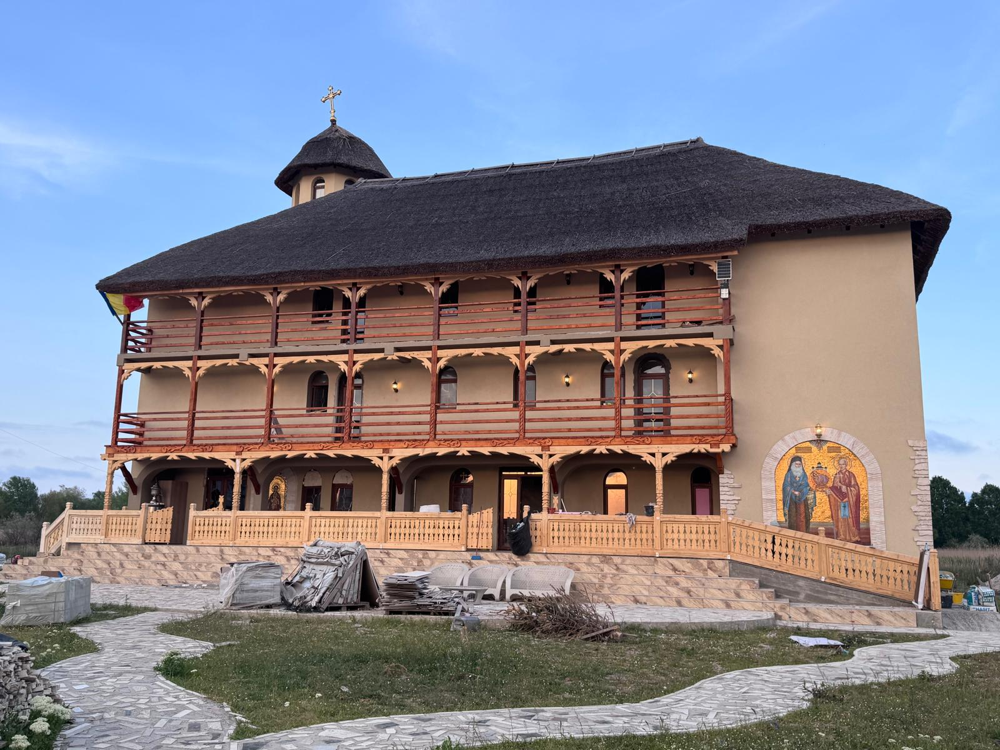
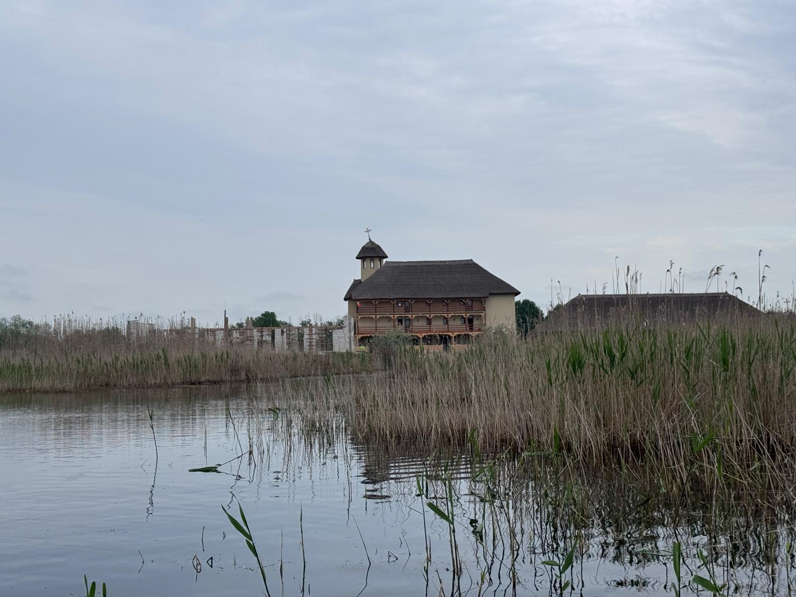

Oază de rugăciune, liniște și duhovnicie în inima Deltei Dunării.
Schitul Periprava este construit pe locul de jertfă a mii de deținuți politici care au suferit pe aceste meleaguri pentru credință și apărarea valorilor neamului.
Prin sprijinul credincioșilor și pelerinilor de pretutindeni, lucrările la ansamblul monastic înaintează, creând un spațiu sfânt de rugăciune și neuitare.


Cântări psaltice interpretate de Vlad Roșu[cite: 1]
Așezat în cea mai izolată zonă a Deltei Dunării, Schitul Periprava duce mai departe tradiția rugăciunii neîncetate. Zona Periprava poartă o încărcătură duhovnicească și istorică deosebită, fiind un loc marcat de jertfă și credință.
Sub îndrumarea duhovnicească a Episcopiei Tulcii, schitul este conceput ca o oază de adăpost sufletesc atât pentru comunitatea locală, cât și pentru pelerinii care străbat Delta în căutarea liniștii.
Numele celor dragi vor fi pomenite la Sfintele Slujbe ale Schitului Periprava.
Orice sprijin financiar este de mare ajutor pentru comunitatea monahală din Periprava.
Adresă: Sat Periprava, Comuna C.A. Rosetti, Jud. Tulcea
Jurisdicție: Episcopia Tulcii
Email: contact@schitulperiprava.ro